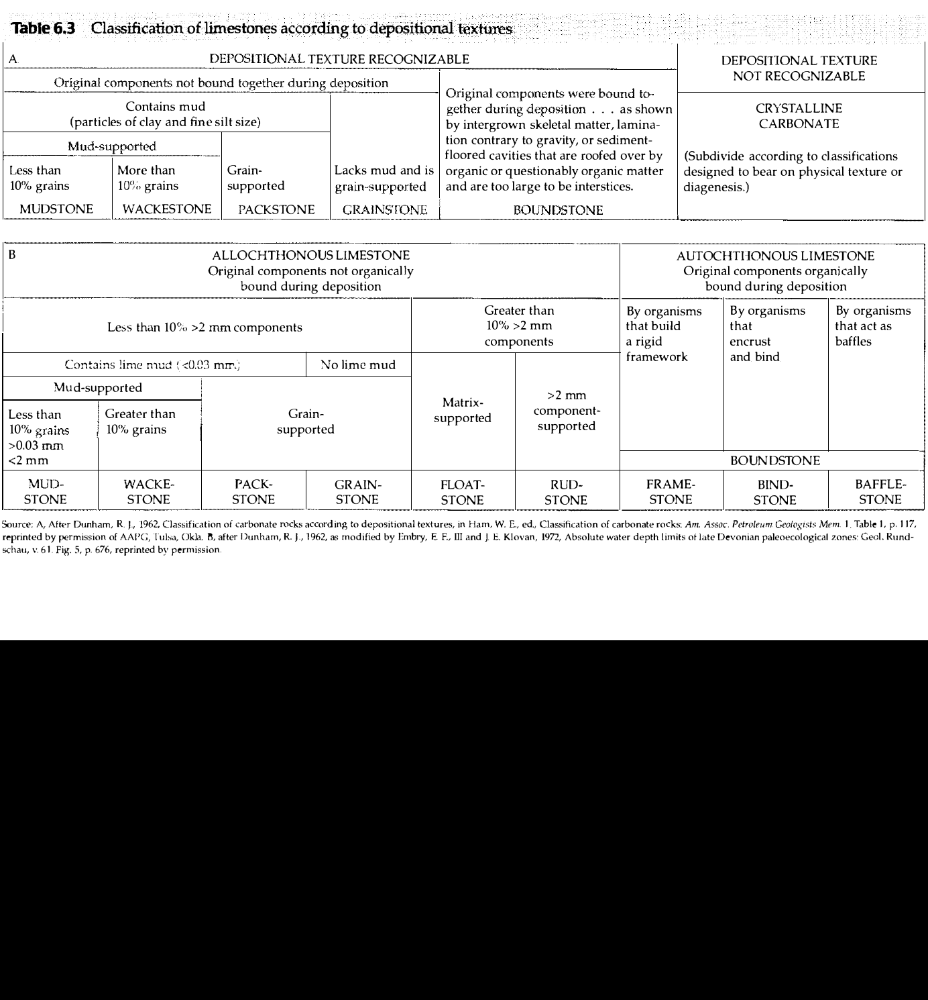

In carbonate petrology, two seminal classification schemes predominate: Robert L. Folk's (1959, 1962) compositional classification (based on allochems and matrix type: micrite vs. sparite) and Robert J. Dunham's (1962) textural classification.
Dunham's system is universally favored for hand-specimen, core, and thin-section description because it directly translates into hydrodynamic energy conditions at the time of deposition:
Dunham established four primary classes for non-bound carbonate rocks based on the ratio of mud to grains and framework support:

Embry and Klovan (1971) expanded Dunham's system to better classify organic reef rocks and coarse bioclastic carbonates containing particles larger than 2 mm (Boggs, 2006, pp. 188–189):
Q.3. A carbonate rock that contains almost no mud and shows grain-supported framework is named as
Why it is correct: As defined in Table 6.3A of Boggs (2006, p. 189) and Dunham (1962), a grainstone is a grain-supported carbonate rock that "lacks mud" (contains almost no micrite). The intergranular pore spaces are typically filled by clear, sparry calcite cement that precipitated during diagenesis after deposition.
Why it is incorrect: While a packstone is grain-supported, it is defined by the presence of lime mud in its interstitial pore spaces ("grain-supported, contains mud"; Boggs, p. 189). Because the question explicitly specifies "contains almost no mud", packstone is eliminated.
Why it is incorrect: In the Embry & Klovan (1971) classification, a floatstone is a coarse carbonate rock containing >10% grains larger than 2 mm, but it is matrix-supported (the large clasts float in a finer matrix). It is neither mud-free nor grain-supported.
Why it is incorrect: A bindstone is an autochthonous reef carbonate where organisms (such as tabular encrusting red algae or cyanobacterial mats) bound the sediment together during life. The question describes an un-bound clastic depositional framework.
| Class | Support Fabric | Lime Mud Content | Depositional Energy | Typical Environment |
|---|---|---|---|---|
| Mudstone | Mud-supported | > 90% mud (< 10% grains) | Very Low | Protected lagoons, deep basinal marine |
| Wackestone | Mud-supported | < 90% mud (> 10% grains) | Low to Moderate | Shallow shelf lagoon, quiet embayment |
| Packstone | Grain-supported | Contains mud matrix | Moderate | Sub-wave-base flank, tempestite dump |
| Grainstone | Grain-supported | Lacks mud (< 1%) | High (winnowed) | Ooid shoals, tidal inlets, beach barrier |
| Boundstone | Organically bound in life | Variable | High to Moderate | Biogenic reef core, organic framework |
| Dunham Class | Primary Characteristic | Equivalent Folk (1959) Term (Ooid example) | Equivalent Folk (1959) Term (Bioclast example) |
|---|---|---|---|
| Grainstone | Grain-supported, spar cement, mud-free | Oosparite | Biosparite |
| Packstone | Grain-supported, micrite matrix present | Packed Oomicrite | Packed Biomicrite |
| Wackestone | Mud-supported, > 10% grains | Sparse Oomicrite | Sparse Biomicrite |
| Mudstone | Mud-supported, < 10% grains | Micrite | Micrite / Fossiliferous Micrite |
| Boundstone | Organically bound framework | Biolithite | Biolithite |